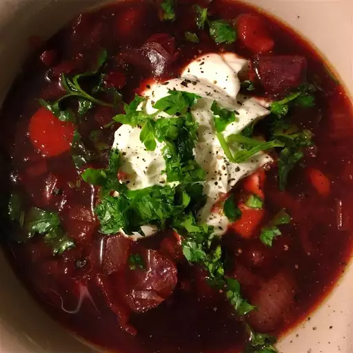

Borscht

Description
This beef borscht started my lifelong love of adding sour cream to things.
The way the tangy, rich cream melts into the hot, beefy broth is a wonder to behold.
Ingridients
- 1 (1 inch thick) slice bone-in beef shank
- 3 quarts water
- 1 onion, chopped
- 1 cup chopped carrots
- ½ cup chopped celery
- 1 bay leaf
- 3 cups diced peeled beets
- 2 cups chopped cabbage
- ¼ cup white vinegar, or to taste
- salt and ground black pepper to taste
- 1 cup sour cream, for garnish
- 2 tablespoons chopped fresh dill, for garnish
Steps
- Cook beef shank in a large soup pot over high heat until browned, about 3 minutes per side. Add water, onion, carrots, celery, and bay leaf; bring to a simmer and cook until meat is tender and falling off the bone, about 4 hours. Strain broth and discard solids.
- Combine beef broth, beets, and cabbage in the same pot; cook, stirring occasionally, until beets are tender, about 30 minutes. Reduce heat to low; add vinegar, salt, and black pepper.
- Serve soup in bowls garnished with sour cream and dill.
Back to Homepage